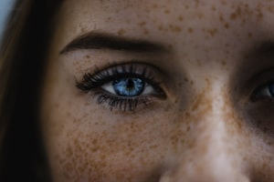
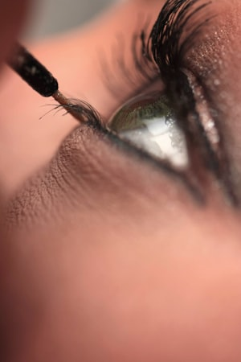
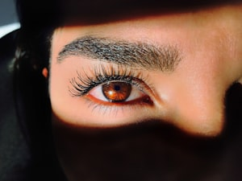
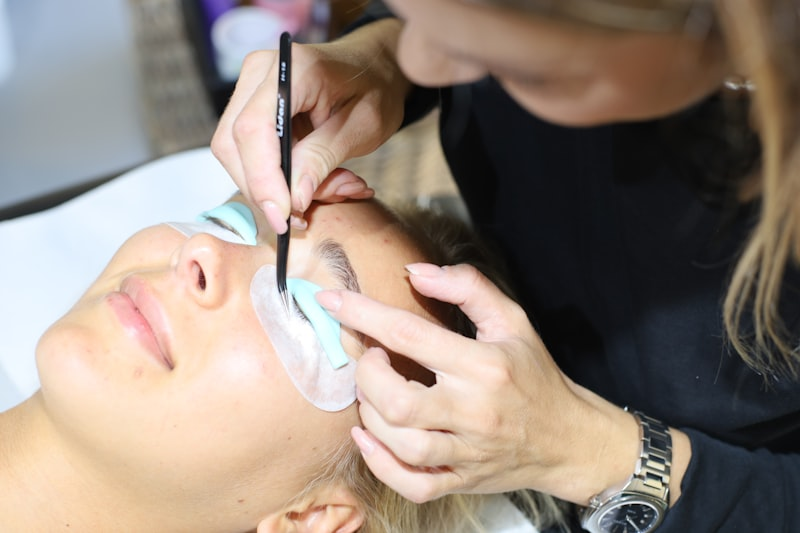

Aqui sua beleza
é única
Extensão de cílios com mapping desenhado para o seu olho. Técnicas seguras, fio natural preservado.
Procedimentos
7 serviçosToque em um item para ver duração e manutenção.
Clássico Fio a Fio R$ 150 manut. 90
O resultado mais discreto da casa: parece cílio seu, só melhor. Ideal para o primeiro contato com extensão.
Agendar ClássicoVolume Brasileiro R$ 150 manut. 90
Preenche falhas e dá densidade sem peso no olhar. Boa escolha para cílios finos ou com espaços.
Agendar BrasileiroVolume Egípcio R$ 150 manut. 90
Desenho marcado, presença sem perder a naturalidade. Combina com o mapping gatinho.
Agendar EgípcioVolume Híbrido R$ 150 manut. 90
Textura de cílio real com a densidade do volume. O mais versátil da lista.
Agendar HíbridoFox Eyes R$ 150 manut. 90
O desenho mais pedido. Exige mapping milimétrico e simetria — reserve o horário com folga.
Agendar Fox EyesLash Lifting R$ 150 manut. 90
Curvatura, nutrição e tintura no seu próprio fio. Efeito de 6 a 8 semanas, zero manutenção diária.
Agendar LiftingRemoção R$ 100
Remoção com produto específico, sem puxar o fio natural. Nunca retire em casa.
Agendar RemoçãoManutenção entre 15 e 20 dias. Após 25 dias, o valor é reajustado para o de uma nova aplicação. Combo cílios + design: 2h.
Estilos de mapping
Escolhemos juntas na consulta, antes de aplicar.

Fios longos no centro. Abre e arredonda o olhar — efeito doce e desperto.

Crescimento até o canto externo. Alonga e afina o formato do olho.

Pico entre centro e canto externo. Lifting visual imediato da pálpebra.
Sobre

Sou Mariana, lash designer há sete anos. Trabalho com mapping personalizado, produtos hipoalergênicos e isolamento fio a fio — nada de fios colados entre si. Meu compromisso é devolver autoestima sem comprometer a saúde do seu cílio natural.
Cuidados pós-procedimento
A durabilidade depende dos primeiros dias.
- 01Evite água, vapor e sauna nas primeiras 24 horas.
- 02Escove os fios pela manhã com a escovinha seca.
- 03Não use rímel nem demaquilante oleoso.
- 04Durma de lado ou de costas, sem pressionar os fios.
- 05Nunca puxe ou corte os fios — remoção só em cabine.
Guia de agendamento
Onde fica o estúdio

Rua das Acácias, 148 — sala 07
Vila Madalena, São Paulo · Seg a Sáb, 9h às 19h
Mariana Alves · Lash Designer